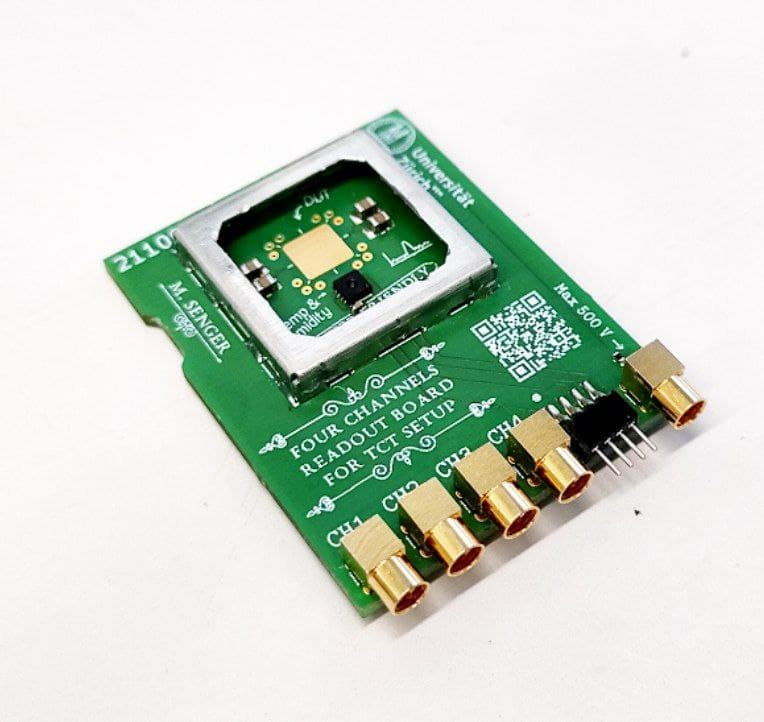
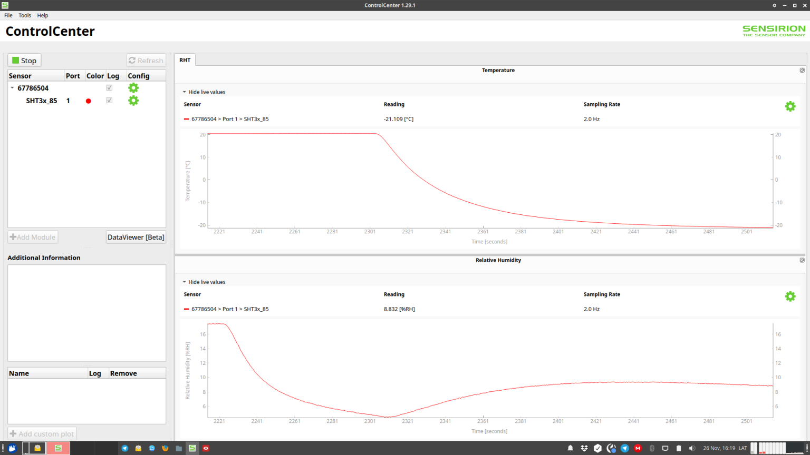

As I mentioned in the previous post, we are planning to measure irradiated TI-LGADs in our TCT setup in the near future. After irradiation the bias current of these devices is considerably higher and since it has an exponential dependence on temperature[1] they are usually cooled down to limit it. To this end I made some modifications to our TCT setup so it can reach temperatures lower than -20 °C.
First of all I designed a simple four channel and passive readout board shown below. This board was designed in such a way that it is small enough to fit within the Peltier cells included in the TCT setup and at the same time has a flat surface, except in one side where the connectors are, so it has a good thermal contact. It also hosts a temperature and humidity sensor (the black chip below the pad to stick the DUT).
In conjunction with this board I designed three 3D printed pieces to arrange everything in place. This is, to keep the four Peltier cells arranged in a pyramidal way (mimicking this), on top of this the readout board, and finally the dry air system to avoid ice formation.
The whole system seems to behave pretty well as seen in the plot below, during a quick test:
The arrange of Peltier cells drains about 4 Ampère at about 12 V (yes, quite inefficient but it gets the job done). During a quick test the setup stabilized at about -22 °C while the dry air was flowing preventing ice from forming. Without this dry air the system can reach a lower temperature (-28 °C) but ice is produced (I tested this).
Everything seems to be ready for the measurements of the irradiated devices ✅.